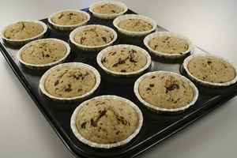

chokolade-banan muffins

Beskrivelse
lækre muffins til hele året
ingredienser
- 2 Æg M/L, hele
- 1 dl. Sukker
- 50 gram Margarine
- 180 gram Hvedemel
- 2 tsk. Bagepulver
- 2 tsk. Vaniljesukker
- 1 dl. Sødmælk
- 2 Banan
- 100 gram Mørk chokolade 44%
trin
- Æg og sukker piskes godt.
- derefter røres smeltet margarine, mosede bananer, hakket chokolade og resten af ingredienserne i.
- Bages midt i ovnen på 175 grader C. alm. ovn i ca. 20 minutter.